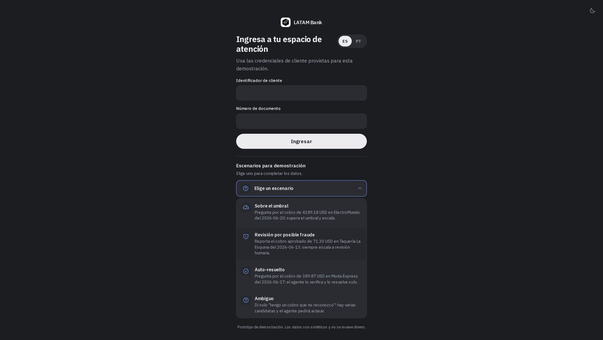

Fast where it is safe, human where it matters.
A banking assistant that resolves the safe transaction disputes in seconds, in Spanish and Portuguese, and hands everything else to a person with the case already prepared.

The model helps. The rules decide.
The policy is code, outside the model. The model only classifies the message, drafts the reply and takes a second look for fraud, and that second look can only add caution.
Resolves alone
- A declined or reversed transaction
- The only candidate
- Under USD 500
Asks first
- Zero or several candidates
- Amount, date or merchant missing
- At most 2 rounds, then it escalates
Hands to a person
- An approved or pending charge
- Suspected fraud
- USD 500 or more, or an unknown amount
The product, in three screens
Real screens from the running application, on synthetic data. The interface speaks Spanish and Portuguese, as the challenge asks.


Measured, and honest about it
Offline results on cases the team generated. Not a production measurement.
549cases tested end to end
372 of 372test cases where it must not resolve alone, and it never did. A small sample never proves zero risk: the upper bound is about 1%.
100% vs 49%intent classification, model against keywords, on a blind set of 228 messages
Limits we state: synthetic data, a sandbox login (not real identity), and no load test or alerting yet. The full evaluation and the path to production are in the repository.